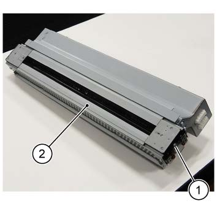

REP 76.3.6 出纸 窗口 组件 
参考 PL:PL 76.3
Removal

执行IOT的[关机]步骤. 确认电源开关已关闭并拔掉电源插头.

拆卸时 the 出纸 窗口 组件, 请勿 directly touch the 窗口 的 出纸 窗口 组件 和/与 your bare hands.
If 那里 is anything adhered to it, 这样的 as fingerprints, 清洁 it by using dry cloth, 等.
If contamination 无法 be removed, use a lens cleaner 和 wipe 和/与 a silicon cloth.
打开前盖板.
拆卸内盖板. (PL 76.1)
拆卸 出纸 灯 组件. (REP 76.3.5)
拆卸 出纸 窗口 组件. (图 1)
拆卸螺钉.
出纸 拆卸 出纸 窗口 组件.

(图 1) ism476068
安装
To 安装, carry 出 the removal steps 按相反顺序.
安装时 the 出纸 灯 组件, push it in 沿着 the 左侧-右侧 Rail on 框架 侧面.
拆卸时 the 出纸 灯 组件, 请勿 directly touch the 窗口 的 出纸 灯 组件 和/与 your bare hands.
If 那里 is anything adhered to it, 这样的 as fingerprints, 清洁 it by using dry cloth, 等.
If contamination 无法 be removed, use a lens cleaner 和 wipe 和/与 a silicon cloth.